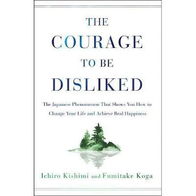

Library › Psychology & People
The Courage to Be Disliked — Summary & Key Lessons

A Japanese phenomenon: Adlerian psychology as a dialogue — freedom is being disliked, and your past doesn't define you.
📖 OPEN THE FULL INTERACTIVE BREAKDOWN →🌐 Read it in Hindi, Hinglish, Gujarati, Tamil & 22 more languages — free, with audio.
💡 The Big Idea
Written as a Socratic dialogue between a skeptical youth and a philosopher, the book presents Alfred Adler's psychology — the 'third giant' beside Freud and Jung, and the most liberating of the three. Its provocations: trauma doesn't exist as destiny (we choose our lifestyle and even our emotions to serve present goals — teleology, not etiology); all problems are interpersonal relationship problems; comparison and recognition-seeking enslave us; and the solution is 'separation of tasks' — do your task, let others do theirs, and accept that being disliked by some people is the proof and price of freedom. Happiness arrives through contribution, and life is a series of present moments, not a line toward a destination.
🧠 The 6 Key Lessons
Lesson 1: Teleology: You Choose Your Emotions
The First Night: Trauma Does Not Exist
Freud's etiology says past causes determine present behavior (abused, therefore anxious). Adler's teleology inverts it: we manufacture emotions and symptoms to serve PRESENT goals. The person 'unable' to go outside first chose the goal of not going out (safety, parental attention) and generates the anxiety to justify it. This sounds harsh and IS liberating: if the past determined everything, change would be impossible and therapy pointless; since behavior serves current goals, changing the goal changes everything, today. Experiences aren't denied — but 'we are not determined by our experiences; the meaning we give them is self-determined.'
📖 Example: The book's opening case: a young woman with a fear of blushing that 'prevents' her confessing to the man she likes. The philosopher's analysis: she NEEDS the symptom — as long as the blushing exists, she can think 'if not for this, I could...' and never risk… Read the full example →
⚡ Do this: Take one 'I can't because...' in your life and re-ask it teleologically: what does this limitation protect me from risking? Answer honestly — then decide if the protection is still worth the prison.
Lesson 2: All Problems Are Interpersonal
The Second Night
Adler's bold reduction: every problem — anxiety, jealousy, procrastination, even the desire for success — is at root an interpersonal relationship problem. Feelings of inferiority aren't objective facts but subjective interpretations born of comparison (the youth feels inferior about his height; the philosopher reframes it as an asset). Healthy inferiority drives growth against your OWN ideal; the 'inferiority complex' turns it into an excuse ('because of X, I can't Y'), and its twin, the superiority complex, fakes eminence to avoid the same test. The exit: stop competing with others entirely — walk in your own forward direction, where everyone else is a comrade walking theirs, not a rival on your track.
📖 Example: The philosopher's proof that even solitude is interpersonal: loneliness requires others to be excluded from; guilt requires someone judged against. And the competition trap: the youth admits he sees peers' successes as his defeats — meaning even friends'… Read the full example →
⚡ Do this: Catch yourself in one comparison today and convert it: from 'ahead of/behind me' to 'walking a different road.' Then define YOUR ideal self and measure this week only against last week's you.
Lesson 3: The Separation of Tasks
The Third Night: Discard Other People's Tasks
The book's most practical tool: for any issue, ask 'whose task is this?' — determined by who ultimately bears the consequence. Studying is the child's task (parents commanding 'study!' are intruding — and the intrusion, not laziness, fuels the rebellion). What others think of you is THEIR task — unknowable, uncontrollable, and none of your business. Living to satisfy others' expectations is discarding your life; demanding others satisfy yours is stealing theirs. Intervention breeds resentment on both sides; support without intrusion ('you can lead a horse to water') preserves both freedom and relationship. Most suffering dissolves the moment tasks are correctly assigned.
📖 Example: The parent-child case study: a father forcing homework produces a child who studies to punish or reward the PARENT — motivation collapses when the enforcer leaves. The Adlerian parent says: 'This is your task; I'm here if you want help' — and means it.… Read the full example →
⚡ Do this: Pick your most draining conflict and rule on it: whose task is each piece (who bears the consequence)? Formally return the pieces that aren't yours — in writing to yourself, or out loud to them.
Lesson 4: The Courage to Be Disliked
The Third Night: Freedom
The title's thesis: since others' opinions of you are their task, freedom has a precise cost — the willingness to be disliked. Recognition-seeking is the deepest unfreedom: the approval-driven life means perpetually performing for an audience whose verdicts you can't control, abandoning yourself to be 'liked by all' — which Adler calls an impossible and self-erasing goal. You don't seek to be disliked (that's just contrarian performance, another audience-game); you accept dislike as the natural exhaust of living by your own values. The person disliked by some is showing symptoms of freedom; the person disliked by none is showing symptoms of total self-abandonment.
📖 Example: The philosopher's arithmetic: in any group of ten, one person will dislike you regardless, two will be close friends, and seven are neutral. The unfree person contorts for the one; the free person invests in the two and lets the arithmetic be. He adds the… Read the full example →
⚡ Do this: Identify one decision you've been shaping for approval — the career move, the opinion unshared, the boundary unset. Make it your way this week, and budget the dislike as the known, fair price.
Lesson 5: Community Feeling: From Self-Interest to Contribution
The Fourth Night
Freedom without connection would be mere isolation, so Adler's endpoint is community feeling: seeing others as comrades and finding your place through contribution. The route has three stations: self-acceptance (not self-affirmation — accept the 60% you are, courageously improving what CAN change, accepting what can't), confidence in others (trust without conditions — doubt guarantees shallow bonds; betrayal is the other's task), and contribution to others (the feeling 'I am of use' — which needs no thanks and no visibility). Crucially, belonging isn't granted by groups; it's earned by active commitment: you find your place by GIVING to the community, never by demanding it prove you welcome.
📖 Example: The book's workplace parable: the person who washes dishes resentfully ('nobody appreciates me') versus the one who feels contribution in the same act. Identical dishes, opposite lives — because the second doesn't need recognition to register usefulness. The… Read the full example →
⚡ Do this: Run the three stations on yourself: name what you accept as unchangeable, extend one act of unconditional trust, and do one unrewarded contribution daily this week — noting the 'I am of use' feeling it produces.
Lesson 6: Live in the Present: Life Is a Series of Dots
The Fifth Night: To Live in Earnest, Here and Now
The final liberation targets the future: life is not a line toward a destination (pass the exam, get the job, then LIVE) — that's 'kinetic' living, where the present is demoted to preparation. Real life is 'energeial': a dance, complete in each moment — a series of dots, each whole. Planning is fine; deferring aliveness is not, because 'here and now' is all that exists and anyone you envy is also only ever living a present moment. The book closes with Adler's answer to meaning: life in general has no preset meaning — YOU confer it, and the reliable path runs through the guiding star of contribution. 'The world is simple, and life is simple too' — what's complicated is the meaning we've been choosing to give it.
📖 Example: The philosopher's dance metaphor: the dancer isn't traveling somewhere — dancing IS the point; stop the music anywhere and the dance was still complete. Against it, the youth's own lived line: school as prep for university, university as prep for career,… Read the full example →
⚡ Do this: Choose one 'preparation' area of your life (the job before the real job, the city before the real city) and live it as the destination for 30 days: full effort, full presence, zero 'someday' talk.
✅ 5-Step Action Plan
- Re-diagnose one 'I can't' teleologically — what is it protecting?
- Convert comparisons: compete only with yesterday's you.
- Rule on your biggest conflict with the separation of tasks.
- Make one approval-shaped decision your own way; pay the dislike-price.
- One unrewarded contribution daily; live one 'preparation' zone as the destination.
💬 Best Quotes from The Courage to Be Disliked
- “Freedom is being disliked by other people.”
- “No matter what has occurred in your life up to this point, it should have no bearing on how you live from now on.”
- “All problems are interpersonal relationship problems.”
Interactive version: mark lessons as read, listen in your language, share quote cards.